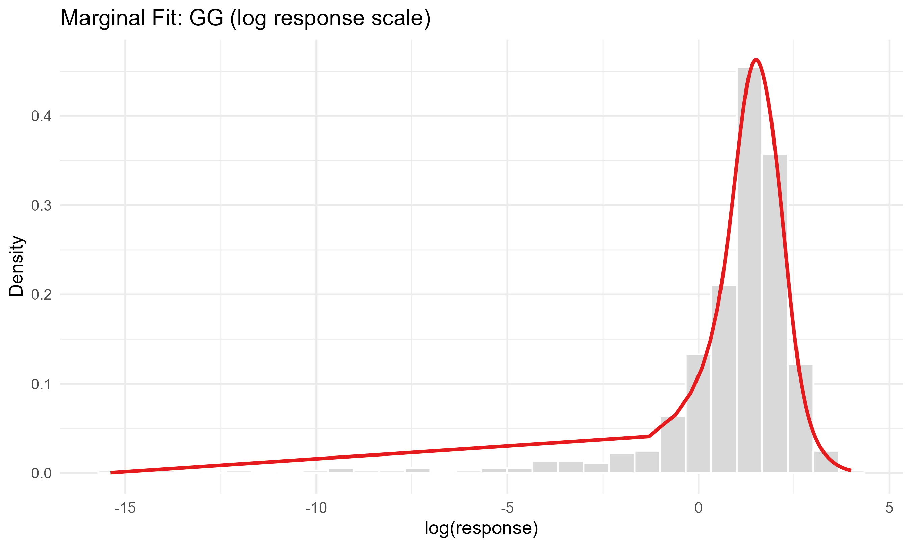

Detailed worked example for a longitudinal gamlss model fit
Source:vignettes/native-simulation-workflow.Rmd
native-simulation-workflow.RmdThis vignette shows an end-to-end workflow for fitting a simulated longitudinal dataset with a longitudinal gamlss model with gamlss margins and copula dependence using gamlss.longitudinal.
The example is simulated so that we can compare the fitted model with the known truth, but the same workflow would be intended for a real dataset (excluding simulation of the dataset, of course).
The workflow is:
- simulate a longitudinal dataset using
simulate_longitudinal_dataset(), - inspect the marginal response, covariates, missingness, and pairwise dependence,
- select a marginal distribution and copula family,
- fit the longitudinal model,
- review inference and model diagnostics,
- answer applied questions with prediction, marginal effects, simulation, and benchmark comparisons.
Because this is a regression workflow, the code below separates exploratory screening from modelling decisions. In a real analysis, the main estimand, scientifically important covariates, factor reference levels, transformations, and sensitivity checks should be chosen before treating coefficient estimates as confirmatory evidence.
Simulate Data
We simulate a balanced dataset with 120 subjects and 5 time points. The response is generalized gamma distributed, with 10% response missingness added at random conditional on observed time, treatment, and age. Each subject has:
- a three-level treatment group:
control,low, orhigh; - a subject-level age generated uniformly between 25 and 70;
- a repeated observation time scaled to
[0, 1].
The marginal mean has treatment, time, and nonlinear age effects. The marginal scale has deliberately visible treatment, time, and age effects so the fitted term diagnostics have something meaningful to recover. A generalized gamma shape term pushes the marginal distribution away from a plain Gamma screen. The dependence structure is Clayton, with its parameter increasing strongly over time so adjacent visits become more correlated later in follow-up.
Simulation code
set.seed(20260521)
n_subject <- 120
time_points <- seq(0, 1, length.out = 5)
treatment_effect <- c(control = 0, low = 0.30, high = 0.65)
truth_mu_age_smooth <- function(x) {
sim_smooth_bump(x, amplitude = 0.60, location = 0.62, width = 0.18) +
sim_smooth_sin(x, amplitude = 0.16)
}
truth_sigma_age_smooth <- function(x) {
sim_smooth_u(x, amplitude = 0.45)
}
truth_nu_age_smooth <- function(x) {
sim_smooth_sigmoid(x, amplitude = 0.35, location = 0.45, steepness = 9)
}
truth_theta_age_smooth <- function(x) {
sim_smooth_bump(x, amplitude = 0.25, location = 0.45, width = 0.22)
}
dat <- simulate_longitudinal_dataset(
n = n_subject,
times = time_points,
margin_dist = GG(mu.link = "log", sigma.link = "log", nu.link = "identity"),
copula_dist = "C",
covariates = function(base) {
simulate_longitudinal_covariates(
base,
subject = list(
treatment = function(subject_data) {
factor(
sample(c("control", "low", "high"), nrow(subject_data), replace = TRUE),
levels = c("control", "low", "high")
)
},
age = function(subject_data) stats::runif(nrow(subject_data), 25, 70)
),
observation = list(
time_scaled = function(long_data) sim_rescale01(long_data$time)
)
)
},
margin_params = list(
mu = function(d) {
age_scaled <- sim_rescale01(d$age)
eta_mu <- 1.00 +
sim_factor_effect(d$treatment, treatment_effect) +
0.35 * d$time_scaled +
truth_mu_age_smooth(age_scaled)
exp(eta_mu)
},
sigma = function(d) {
age_scaled <- sim_rescale01(d$age)
eta_sigma <- -1.05 +
0.25 * sim_factor_effect(d$treatment, c(control = 0, low = 1, high = 1)) +
1.25 * d$time_scaled +
truth_sigma_age_smooth(age_scaled)
exp(eta_sigma)
},
nu = function(d) {
age_scaled <- sim_rescale01(d$age)
1.15 + 0.55 * d$time_scaled + truth_nu_age_smooth(age_scaled)
}
),
copula_params = list(
theta = function(e) {
age_scaled <- sim_rescale01(e$age)
time_left_scaled <- sim_rescale01(e$time_left)
eta_theta <- -0.70 +
1.80 * time_left_scaled +
truth_theta_age_smooth(age_scaled)
exp(eta_theta)
}
),
seed = 20260521
)
dat$age_scaled <- sim_rescale01(dat$age)
missing_weight <- stats::plogis(
-0.70 +
1.15 * dat$time_scaled +
0.45 * (dat$treatment == "high") -
0.30 * dat$age_scaled
)
missing_rows <- sample(
seq_len(nrow(dat)),
size = round(0.10 * nrow(dat)),
replace = FALSE,
prob = missing_weight
)
dat$response[missing_rows] <- NA_real_
dat$response_missing <- is.na(dat$response)
head(dat)
#> subject time response treatment age time_scaled u true_mu
#> 1 1 0.00 10.5193913 high 34.63283 0.00 0.9161976 6.341008
#> 2 1 0.25 9.9952850 high 34.63283 0.25 0.8088648 6.920844
#> 3 1 0.50 4.3193839 high 34.63283 0.50 0.4132885 7.553702
#> 4 1 0.75 NA high 34.63283 0.75 0.5084325 8.244429
#> 5 1 1.00 0.1297988 high 34.63283 1.00 0.2628540 8.998319
#> 6 2 0.00 NA low 55.90383 0.00 0.8430505 5.550461
#> true_sigma true_nu true_theta true_zeta age_scaled response_missing
#> 1 0.4478539 1.010216 NA NA 0.2066231 FALSE
#> 2 0.6121436 1.147716 0.5686895 0 0.2066231 FALSE
#> 3 0.8367012 1.285216 1.0362198 0 0.2066231 FALSE
#> 4 1.1436349 1.422716 1.8881156 0 0.2066231 TRUE
#> 5 1.5631636 1.560216 3.4403710 0 0.2066231 FALSE
#> 6 0.4375933 1.287600 NA NA 0.6859182 TRUEFor real data, this is also the point to check the analysis-ready data frame: one row per subject-time combination, stable subject identifiers, correctly ordered time values, intended factor reference levels, and missing response patterns. Continuous variables used in smooths or interactions are often easier to interpret and fit when centered or scaled before modelling.
str(dat)
#> 'data.frame': 600 obs. of 14 variables:
#> $ subject : Factor w/ 120 levels "1","2","3","4",..: 1 1 1 1 1 2 2 2 2 2 ...
#> $ time : num 0 0.25 0.5 0.75 1 0 0.25 0.5 0.75 1 ...
#> $ response : num 10.52 10 4.32 NA 0.13 ...
#> $ treatment : Factor w/ 3 levels "control","low",..: 3 3 3 3 3 2 2 2 2 2 ...
#> $ age : num 34.6 34.6 34.6 34.6 34.6 ...
#> $ time_scaled : num 0 0.25 0.5 0.75 1 0 0.25 0.5 0.75 1 ...
#> $ u : num 0.916 0.809 0.413 0.508 0.263 ...
#> $ true_mu : num 6.34 6.92 7.55 8.24 9 ...
#> $ true_sigma : num 0.448 0.612 0.837 1.144 1.563 ...
#> $ true_nu : num 1.01 1.15 1.29 1.42 1.56 ...
#> $ true_theta : num NA 0.569 1.036 1.888 3.44 ...
#> $ true_zeta : num NA 0 0 0 0 NA 0 0 0 0 ...
#> $ age_scaled : num 0.207 0.207 0.207 0.207 0.207 ...
#> $ response_missing: logi FALSE FALSE FALSE TRUE FALSE TRUE ...
table(dat$treatment)
#>
#> control low high
#> 150 210 240
table(dat$time)
#>
#> 0 0.25 0.5 0.75 1
#> 120 120 120 120 120
mean(dat$response_missing)
#> [1] 0.1
aggregate(true_sigma ~ time, dat, mean)
#> time true_sigma
#> 1 0.00 0.4244534
#> 2 0.25 0.5801591
#> 3 0.50 0.7929834
#> 4 0.75 1.0838798
#> 5 1.00 1.4814881
aggregate(true_nu ~ time, dat, mean)
#> time true_nu
#> 1 0.00 1.159516
#> 2 0.25 1.297016
#> 3 0.50 1.434516
#> 4 0.75 1.572016
#> 5 1.00 1.709516
aggregate(true_theta ~ time, dat, mean, na.rm = TRUE)
#> time true_theta
#> 1 0.25 0.5639027
#> 2 0.50 1.0274978
#> 3 0.75 1.8722230
#> 4 1.00 3.4114128check_missingness() screens whether response missingness
is associated with observed features. A significant predictor
association is compatible with MAR conditional on those features; it
does not prove MNAR, and a nonsignificant screen cannot rule MNAR
out.
missingness_check <- check_missingness(
dat,
response_var = "response",
time_var = "time",
subject_var = "subject",
predictors = c("time_scaled", "treatment", "age_scaled")
)
missingness_check
#>
#> Response Missingness Check
#> --------------------------
#> n n_missing prop_missing
#> 600 60 0.1
#>
#> Assessment: no_detected_covariate_association
#> No observed predictor association was detected at alpha = 0.05 . This is compatible with MCAR, but MNAR cannot be ruled out from observed data alone.
#>
#> Predictor tests:
#> term statistic df p_value
#> time 0.0000 0 NA
#> time_scaled 0.0000 0 NA
#> treatment 5.7599 2 0.05614
#> age_scaled 0.3881 1 0.53329Inspect The Response
plot_dist() gives a compact view of the marginal
response distribution at each time point and the pairwise dependence
between time points. The off-diagonal panels use pseudo-observations
here, so the dependence pattern is shown on a copula scale. In this
simulation, the diagonal panels should become more right-skewed over
time, and later adjacent-visit panels should show stronger
dependence.
plot_dist(
dat,
margin_dist = GG(mu.link = "log", sigma.link = "log", nu.link = "identity"),
subject_var = "subject",
time_var = "time",
response_var = "response"
)
Choose A Marginal Distribution
For positive continuous responses, select_margin() gives
a ranked marginal screen using gamlss::fitDist() and marks
whether each family is supported by gamlss_longitudinal().
The screen uses a focused set of ten positive, right-skewed continuous
families so the first shortlist is interpretable rather than dominated
by very flexible Box-Cox-style families. This screen does not account
for longitudinal dependence or covariates, so it is a shortlist rather
than the final model.
margin_candidate_families <- c(
"GG", "GA", "GIG", "WEI", "WEI2",
"WEI3", "EXP", "PARETO2", "GP", "LOGNO"
)
margin_selection <- select_margin(
dat,
response_var = "response",
type = "realplus",
families = margin_candidate_families,
try.gamlss = FALSE,
trace = FALSE
)
#> | | | 0% | |=== | 4% | |====== | 9% | |========= | 13% | |============ | 17% | |=============== | 22% | |================== | 26% | |===================== | 30% | |======================== | 35% | |=========================== | 39% | |============================== | 43% | |================================= | 48% | |===================================== | 52% | |======================================== | 57% | |=========================================== | 61% | |============================================== | 65% | |================================================= | 70% | |==================================================== | 74% | |======================================================= | 78% | |========================================================== | 83% | |============================================================= | 87% | |================================================================ | 91% | |=================================================================== | 96% | |======================================================================| 100%
margin_selection
#>
#> Marginal Distribution Screen
#> ----------------------------
#> Selected: GG
#>
#> family AIC type rank delta_AIC supported_by_longitudinal
#> GG 2790.710 realplus 1 0.00000 TRUE
#> GA 2807.901 realplus 2 17.19133 TRUE
#> GIG 2809.901 realplus 3 19.19134 TRUE
#> WEI 2821.609 realplus 4 30.89932 TRUE
#> WEI2 2821.609 realplus 5 30.89932 TRUE
#> WEI3 2821.609 realplus 6 30.89932 TRUE
#> EXP 2827.273 realplus 7 36.56275 TRUE
#> GP 2829.143 realplus 8 38.43287 TRUE
#> PARETO2 2829.143 realplus 9 38.43287 TRUE
#> LOGNO 3259.033 realplus 10 468.32336 TRUE
margin_choice <- best_fit(margin_selection)
margin_choice[c("family_name", "rank", "AIC", "delta_AIC", "supported_by_longitudinal")]
#> $family_name
#> [1] "GG"
#>
#> $rank
#> [1] 1
#>
#> $AIC
#> [1] 2790.71
#>
#> $delta_AIC
#> [1] 0
#>
#> $supported_by_longitudinal
#> [1] TRUE
screened_margin_dist <- best_fit_family(margin_selection)
screened_margin_family <- margin_choice$family_name
margin_dist <- if (identical(screened_margin_family, "GG")) {
GG(mu.link = "log", sigma.link = "log", nu.link = "identity")
} else {
screened_margin_dist
}The detailed model fit starts from the screened marginal family
rather than the known simulation truth. The explicit GG()
branch only fixes interpretable link functions when the selected family
is generalized gamma. The overlay below is an intercept-only exploratory
marginal fit; it is useful for checking the first shortlist, while the
fitted model overlay after the full model uses row-specific
covariate-adjusted parameters.
plot_margin_fit(
dat,
margin_dist = margin_dist,
response_var = "response",
bins = 30,
response_scale = "log"
)
Choose A Copula Family
The native select_copula() helper screens candidate
copula families using copula log-likelihoods on adjacent-time
pseudo-observation pairs. In the standard workflow, pseudo-observations
are created automatically from the observed response and selected
marginal distribution.
copula_selection <- select_copula(
data = dat,
response_var = "response",
margin_dist = margin_dist,
subject_var = "subject",
time_var = "time",
families = c("N", "C", "F", "G", "J", "t"),
t_df_grid = c(3, 4, 6, 10, 20)
)
copula_selection
#> family par par2 tau logLik AIC BIC n_pairs
#> 1 F 5.8527208 0 0.5063406 100.64466 -199.28932 -195.31297 394
#> 2 N 0.6354938 0 0.4384069 95.71206 -189.42412 -185.44777 394
#> 3 t 0.6423379 20 0.4440708 96.55031 -189.10062 -181.14792 394
#> 4 G 1.7047750 0 0.4134123 76.23822 -150.47645 -146.50009 394
#> 5 C 0.7196895 0 0.2646219 63.64762 -125.29524 -121.31889 394
#> 6 J 1.7204565 0 0.2860853 38.01710 -74.03421 -70.05786 394
copula_choice <- best_fit(copula_selection)
copula_choice[c("family", "rank", "AIC", "delta_AIC", "tau")]
#> $family
#> [1] "F"
#>
#> $<NA>
#> NULL
#>
#> $AIC
#> [1] -199.2893
#>
#> $<NA>
#> NULL
#>
#> $tau
#> [1] 0.5063406
screened_copula_dist <- best_fit_family(copula_selection)
copula_dist <- screened_copula_distThe separate marginal and copula screens are intentionally
lightweight. As an additional screen,
select_joint_distribution() ranks margin-copula
combinations by fitting simple joint longitudinal models. This is
slower, but it confirms whether the separate screens point in the same
direction.
top_margin_families <- head(
margin_selection$family[margin_selection$supported_by_longitudinal],
10
)
joint_screen_margins <- screened_margin_family
joint_selection <- select_joint_distribution(
data = dat,
response_var = "response",
subject_var = "subject",
time_var = "time",
margin_families = joint_screen_margins,
copula_families = c("N", "C", "F", "G", "J", "t"),
fit_args = list(
max_outer_iter = 2,
max_inner_iter = 2,
outer_stop_crit = 1e-2,
inner_stop_crit = 1e-2,
use_backtracking = FALSE
),
trace = FALSE
)
joint_selection
#>
#> Joint Distribution Screen
#> -------------------------
#> Selected: GG+F
#> Criterion: AIC
#>
#> rank margin_family copula_family logLik AIC BIC EDF converged
#> 1 GG F -1294.784 2597.568 2615.156 4 FALSE
#> 2 GG N -1295.397 2598.795 2616.382 4 FALSE
#> 3 GG G -1312.751 2633.502 2651.090 4 FALSE
#> 4 GG t -1331.328 2672.656 2694.640 5 FALSE
#> 5 GG C -1349.025 2706.050 2723.638 4 FALSE
#> 6 GG J -1361.384 2730.768 2748.356 4 FALSE
#> elapsed_sec error
#> 0.2287228 <NA>
#> 0.5626850 <NA>
#> 0.2268760 <NA>
#> 0.4332120 <NA>
#> 0.2492099 <NA>
#> 0.2481790 <NA>
joint_choice <- best_fit(joint_selection)
joint_choice[c("margin_family_name", "copula_family", "rank", "AIC", "delta_AIC")]
#> $margin_family_name
#> [1] "GG"
#>
#> $copula_family
#> [1] "F"
#>
#> $rank
#> [1] 1
#>
#> $AIC
#> [1] 2597.568
#>
#> $delta_AIC
#> [1] 0
data.frame(
screen = c("separate", "joint"),
margin = c(screened_margin_family, joint_choice$margin_family_name),
copula = c(copula_dist, joint_choice$copula_family)
)
#> screen margin copula
#> 1 separate GG F
#> 2 joint GG FFit The Longitudinal Model
The final model uses smooth age effects in the marginal mean,
marginal scale, generalized-gamma shape, and copula dependence
parameter. The example makes the time effects on mu and
sigma, and the treatment effect on sigma,
intentionally strong enough that the fitted term diagnostics can recover
them with useful uncertainty bands.
Before fitting, decide what the regression model is meant to
estimate. Here the primary questions are how treatment and time affect
the marginal mean, whether the scale changes across treatment, time, and
age, and whether within-subject dependence changes with time and age.
The factor levels were fixed at simulation time so control
is the reference group, and age_scaled was put on
[0, 1] so smooths and copula terms are easier to fit and
compare. The spline basis dimensions (k) are deliberately
modest: large enough to represent the known smooths, but not so large
that the scale and dependence submodels become hard to interpret.
fit <- gamlss_longitudinal(
dataset = dat,
margin_dist = margin_dist,
copula_dist = copula_dist,
time_var = "time",
subject_var = "subject",
mu.formula = response ~ treatment + time_scaled + s(age_scaled, bs = "ps", k = 8),
sigma.formula = ~ treatment + time_scaled + s(age_scaled, bs = "ps", k = 5),
nu.formula = ~ time_scaled + s(age_scaled, bs = "ps", k = 5),
theta.formula = ~ time_scaled + s(age_scaled, bs = "ps", k = 8),
max_outer_iter = 8,
max_inner_iter = 8,
outer_stop_crit = 1e-3,
inner_stop_crit = 1e-3,
verbose = 0
)
summary(fit)
#>
#> GAMLSS Longitudinal Model Summary
#> --------------------------------
#> Margin distribution: GG
#> Copula distribution: F
#> Observations: 600 | Subjects: 120 | Time points: 5
#> Fixed coefficients: 12 | Smooth terms: 4 | Smooth EDF: 9.5037
#>
#> Fixed coefficients:
#> --------------------
#> [mu]
#> term estimate std_error p_value signif
#> mu.intercept 1.3431 0.0516 <0.00001 ***
#> mu.treatmentlow 0.1972 0.0815 0.01560 *
#> mu.treatmenthigh 0.5862 0.0686 <0.00001 ***
#> mu.time_scaled -0.1813 0.1609 0.25986
#> --------------------
#> [sigma]
#> term estimate std_error p_value signif
#> sigma.intercept -1.2525 0.0814 <0.00001 ***
#> sigma.treatmentlow 0.4254 0.0788 <0.00001 ***
#> sigma.treatmenthigh 0.2585 0.0773 0.00083 ***
#> sigma.time_scaled 1.5535 0.1126 <0.00001 ***
#> --------------------
#> [nu]
#> term estimate std_error p_value signif
#> nu.intercept 1.0065 0.3592 0.00508 **
#> nu.time_scaled 0.0629 0.3823 0.86922
#> --------------------
#> [theta]
#> term estimate std_error p_value signif
#> theta.intercept 1.5198 0.0789 <0.00001 ***
#> theta.time_scaled 6.2821 0.1185 0.00000 ***
#> Signif. codes: 0 '***' 0.001 '**' 0.01 '*' 0.05 '.' 0.1 ' ' 1
#>
#> Smooth terms:
#> --------------------
#> parameter smooth_term
#> mu s(age_scaled, bs = "ps", k = 8)
#> sigma s(age_scaled, bs = "ps", k = 5)
#> nu s(age_scaled, bs = "ps", k = 5)
#> theta s(age_scaled, bs = "ps", k = 8)
#> Use plot(object) to visualize smooth and fixed terms with confidence bands.
#>
#> Model Selection Criteria:
#> --------------------
#> marginal copula joint
#> LogLik -1185.4488 78.8743 -1106.5745
#> AIC 2405.3380 -149.1816 2256.1564
#> BIC 2481.0541 -130.3475 2350.7066
#> EDF 17.2202 4.2835 21.5037
#> --------------------------------The summary gives coefficient estimates, uncertainty, and model fit
statistics. The marginal mean (mu), marginal scale
(sigma), generalized-gamma shape (nu), and
copula dependence (theta) coefficients answer different
questions, so they should not be read as a single “effect” table. Mean
effects describe the response location, scale effects describe
heterogeneity or dispersion, shape effects describe remaining
distributional asymmetry, and dependence effects describe within-subject
association after the marginal model has been accounted for.
The fitted marginal overlay now uses the row-specific distributional parameters from the longitudinal model, so it is a better check than the intercept-only screening plot for whether the fitted marginal distribution tracks the observed response scale and spread.
plot_margin_fit(
fit = fit,
data = dat,
bins = 30,
response_scale = "log"
)
coef_names <- names(coef(fit))
inference_terms <- coef_names[
grepl("^mu\\.treatment|^mu\\.time_scaled|^sigma\\.treatment|^sigma\\.time_scaled|^nu\\.time_scaled|^theta\\.time_scaled", coef_names)
]
confint(fit, parm = inference_terms)
#> 2.5 % 97.5 %
#> theta.time_scaled 6.04980443 6.5143862
#> nu.time_scaled -0.68636971 0.8122673
#> sigma.treatmentlow 0.27098969 0.5798054
#> sigma.treatmenthigh 0.10699039 0.4099978
#> sigma.time_scaled 1.33279513 1.7741076
#> mu.treatmentlow 0.03735824 0.3569961
#> mu.treatmenthigh 0.45168808 0.7207520
#> mu.time_scaled -0.49666466 0.1340729
wald_test(fit, terms = "mu.treatment")
#>
#> Wald Test for gamlss.longitudinal
#> ---------------------------------
#> Test type: individual
#> VCOV method: analytical
#>
#> term estimate rhs std_error statistic p_value method
#> mu.treatmentlow 0.1972 0 0.08154 2.418 1.560e-02 analytical
#> mu.treatmenthigh 0.5862 0 0.06864 8.541 1.336e-17 analytical
wald_test(fit, terms = "theta.time_scaled")
#>
#> Wald Test for gamlss.longitudinal
#> ---------------------------------
#> Test type: individual
#> VCOV method: analytical
#>
#> term estimate rhs std_error statistic p_value method
#> theta.time_scaled 6.282 0 0.1185 53.01 0 analyticalLikelihood comparisons are useful for planned sensitivity checks when models are nested or approximately nested and fitted to the same observed rows. Here we compare the main model to a simpler model with linear age effects and a simpler dependence formula.
fit_reduced <- gamlss_longitudinal(
dataset = dat,
margin_dist = margin_dist,
copula_dist = copula_dist,
time_var = "time",
subject_var = "subject",
mu.formula = response ~ treatment + time_scaled + age_scaled,
sigma.formula = ~ treatment + time_scaled + age_scaled,
nu.formula = ~ time_scaled,
theta.formula = ~ time_scaled,
max_outer_iter = 6,
max_inner_iter = 6,
outer_stop_crit = 1e-3,
inner_stop_crit = 1e-3,
verbose = 0
)
likelihood_compare(reduced = fit_reduced, main = fit)
#>
#> Likelihood Comparison for gamlss.longitudinal
#> --------------------------------------------
#> Sequential LR rows compare each model with the previous row.
#>
#> model n_obs df logLik AIC BIC delta_df LR_statistic p_value
#> reduced 600 14.0 -1120 2267 2329 NA NA NA
#> main 600 21.5 -1107 2256 2351 7.504 26.31 0.0006492For final reporting, bootstrap inference can be used as a robustness
check on selected terms. This refits the model for each simulated
dataset, so the small R below is only to show the workflow;
applied analyses need many more replicates.
boot <- bootstrap_inference(
fit,
R = 1,
terms = c("mu.treatment", "theta.time_scaled"),
seed = 20260521,
fit_args = list(
max_outer_iter = 4,
max_inner_iter = 4,
outer_stop_crit = 1e-2,
inner_stop_crit = 1e-2,
use_backtracking = FALSE
)
)
boot
#>
#> Parametric Bootstrap for gamlss.longitudinal
#> -------------------------------------------
#> Replicates: 1
#> Simulation: fitted copula model
#> Failed refits: 0
#>
#> term estimate bootstrap_mean bootstrap_se conf.low conf.high
#> mu.treatmentlow 0.1972 0.2281 NA 0.2281 0.2281
#> mu.treatmenthigh 0.5862 0.5554 NA 0.5554 0.5554
#> theta.time_scaled 6.2821 6.3759 NA 6.3759 6.3759
#> successful_replicates
#> 1
#> 1
#> 1Model Checks
check_model() turns the main diagnostics into a compact
decision object. It does not replace visual review, but it gives a
useful first pass over convergence, calibration, tail behaviour,
residual dependence, and inference quality. The residual-dependence flag
uses a practical correlation cutoff, not a formal test; here we use
0.25 so very small remaining correlations are reviewed
visually rather than treated as automatic failures.
check <- check_model(fit, include_vcov = TRUE, dependence_cor_cutoff = 0.25)
check
#>
#> GAMLSS Longitudinal Model Check
#> ------------------------------
#> Margin distribution: GG
#> Copula distribution: F
#> Converged: no
#> Joint logLik: -1107
#>
#> Scoring summary:
#> logs mae mse dss
#> 2.195 3.145 24.38 25.49
#>
#> PIT summary:
#> n mean sd expected_sd ks_p_value
#> 540 0.5172 0.2941 0.2887 0.149
#>
#> Tail calibration:
#> threshold lower upper expected lower_ratio upper_ratio
#> 0.05 0.0463 0.05556 0.05 0.9259 1.111
#> 0.10 0.1074 0.11667 0.10 1.0741 1.167
#>
#> Residual dependence:
#> lag normal_score_cor cutoff
#> 1 0.5241 0.25
#>
#> Diagnostic checks:
#> area severity
#> convergence concern
#> dependence concern
#> message
#> Convergence was not confirmed.
#> Dependence remains after the copula in normal-score residuals (|lag-1 cor| > 0.25).
#> action
#> Refit with more iterations, different starts, or a simpler specification.
#> Consider a different copula family, time-varying dependence, richer serial structure, or a sensitivity refit before treating this as a failure.
#>
#> Warnings to report:
#> area severity
#> convergence concern
#> dependence concern
#> message
#> Convergence was not confirmed.
#> Dependence remains after the copula in normal-score residuals (|lag-1 cor| > 0.25).
#> action
#> Refit with more iterations, different starts, or a simpler specification.
#> Consider a different copula family, time-varying dependence, richer serial structure, or a sensitivity refit before treating this as a failure.
#>
#> Recommendation:
#> role
#> revise_before_primary
#> message
#> At least one diagnostic concern should be addressed before using this model as the primary analysis.
#>
#> Decisions:
#> * Convergence was not confirmed. Refit with more iterations, different starts, or a simpler specification.
#> * Dependence remains after the copula in normal-score residuals (|lag-1 cor| > 0.25). Consider a different copula family, time-varying dependence, richer serial structure, or a sensitivity refit before treating this as a failure.
check$warnings
#> area severity
#> 1 convergence concern
#> 2 dependence concern
#> message
#> 1 Convergence was not confirmed.
#> 2 Dependence remains after the copula in normal-score residuals (|lag-1 cor| > 0.25).
#> action
#> 1 Refit with more iterations, different starts, or a simpler specification.
#> 2 Consider a different copula family, time-varying dependence, richer serial structure, or a sensitivity refit before treating this as a failure.
check$recommendation
#> role
#> 1 revise_before_primary
#> message
#> 1 At least one diagnostic concern should be addressed before using this model as the primary analysis.Sensitivity Screens
After the first full fit, revisit the modelling choices that were shortlisted up front. The code below refits the same regression structure across the initial top 10 supported marginal families and all native copula families. It is intentionally collapsed in the rendered workflow because it is a fit-intensive sensitivity review.
Margin-copula sensitivity code
sensitivity_selection <- select_joint_distribution(
data = dat,
response_var = "response",
subject_var = "subject",
time_var = "time",
margin_families = top_margin_families,
copula_families = c("N", "C", "F", "G", "J", "t"),
fit_args = list(
mu.formula = response ~ treatment + time_scaled + s(age_scaled, bs = "ps", k = 8),
sigma.formula = ~ treatment + time_scaled + s(age_scaled, bs = "ps", k = 5),
nu.formula = ~ time_scaled + s(age_scaled, bs = "ps", k = 5),
theta.formula = ~ time_scaled + s(age_scaled, bs = "ps", k = 8)
),
trace = FALSE
)
head(sensitivity_selection, 15)
primary_signature <- paste(
fit$margin_dist$family[[1]],
fit$copula_dist,
sep = "+"
)
primary_signature %in% paste(
sensitivity_selection$margin_family,
sensitivity_selection$copula_family,
sep = "+"
)Because this is a simulation, we can now compare the data-first screens with the known generating choices. In real data these truth columns would not exist, so this check belongs after the ordinary modelling workflow rather than before the initial fit.
truth_margin_rank <- margin_selection[
margin_selection$family == "GG",
c("family", "rank", "AIC", "delta_AIC"),
drop = FALSE
]
truth_copula_screen <- select_copula(
data = dat,
u_var = "u",
subject_var = "subject",
time_var = "time",
families = c("N", "C", "F", "G", "J", "t"),
t_df_grid = c(3, 4, 6, 10, 20)
)
truth_margin_rank
#>
#> Marginal Distribution Screen
#> ----------------------------
#> Selected:
#>
#> family rank AIC delta_AIC
#> GG 1 2790.71 0
truth_copula_screen
#> family par par2 tau logLik AIC BIC n_pairs
#> 1 C 1.4258882 0 0.4162098 115.98636 -229.97272 -225.79893 480
#> 2 t 0.6045906 6 0.4133265 96.53614 -189.07228 -180.72471 480
#> 3 N 0.6015846 0 0.4109274 92.42706 -182.85413 -178.68034 480
#> 4 F 4.2950071 0 0.4096134 89.96176 -177.92353 -173.74974 480
#> 5 G 1.5530932 0 0.3561236 69.90015 -137.80029 -133.62650 480
#> 6 J 1.5950600 0 0.2496792 41.83593 -81.67186 -77.49807 480
plot_copula_fit(
data = dat,
copula_dist = truth_copula_screen,
u_var = "u",
subject_var = "subject",
time_var = "time"
)
Standard Review Checklist
For a real longitudinal regression analysis, the model review should also include a few checks that are easy to overlook:
- confirm the intended estimand, response scale, link functions, factor reference levels, and time ordering before interpreting coefficients;
- review missing visits, dropout, and structurally impossible subject-time rows separately from ordinary missing responses;
- inspect convergence, parameter boundaries, smoothing degrees of freedom, and whether uncertainty estimates are stable enough for the planned inference;
- check calibration and residual patterns overall and by key groups such as time, treatment, age bands, and high-leverage subjects;
- check whether missingness is absent, plausibly MCAR, or associated with observed features that should be included in the analysis or sensitivity plan;
- repeat the primary conclusions under plausible marginal distributions, copula families, and simpler/richer formulas;
- compare against a familiar mean model when the scientific question is mostly about the mean, and against predictive or simulation checks when the question depends on tails, intervals, or trajectories;
- perform posterior- or fitted-simulation style checks against quantities that matter scientifically, such as trajectory ranges, event probabilities, or high quantiles;
- inspect influential subjects or time periods by refitting or summarising diagnostics after excluding obvious leverage points;
- document which warnings were resolved, which remain, and why the remaining limitations do not overturn the primary conclusion.
This checklist is adapted from standard regression modelling and validation guidance, longitudinal-data texts, missing-data workflows, GAMLSS/GAM diagnostics, and copula modelling references. In particular, Harrell (2015) motivates pre-specified modelling strategy, validation, calibration, and bootstrap-based uncertainty checks; Fitzmaurice, Laird, and Ware (2011) and Diggle et al. (2002) cover repeated-measure structure, time ordering, within-subject association, and missing longitudinal responses; van Buuren (2018) covers practical missing-data review; Rigby and Stasinopoulos (2005) and Wood (2017) motivate distributional and smooth-term diagnostics; and Nelsen (2006) and Joe (2014) cover dependence, tail dependence, and copula model assessment.
The standard model diagnostic dashboard combines PIT, QQ, worm, rootogram, and forecast-style checks.
plot(fit, data = dat)
Term Diagnostics
Because this is simulated, we first plot the true term contributions used to generate the data. The fitted term dashboard is shown immediately afterwards.
True-term plotting code
term_theme <- function(p) {
p +
theme_minimal(base_size = 8.5) +
theme(
plot.title = element_text(size = 9),
axis.title = element_text(size = 8),
axis.text = element_text(size = 7),
plot.caption = element_text(size = 7)
)
}
truth_smooth_plot <- function(x, contribution, title, xlab) {
plot_df <- data.frame(x = x, contribution = contribution)
term_theme(
ggplot(plot_df, aes(x = x, y = contribution)) +
geom_line(color = "black", linewidth = 0.8) +
labs(title = title, x = xlab, y = paste0("smooth(", xlab, ")"), caption = "truth")
)
}
truth_continuous_plot <- function(x, contribution, title, xlab, ylab) {
plot_df <- data.frame(x = x, contribution = contribution)
term_theme(
ggplot(plot_df, aes(x = x, y = contribution)) +
geom_line(color = "black", linewidth = 0.8) +
labs(title = title, x = xlab, y = ylab, caption = "truth")
)
}
truth_factor_plot <- function(effects, title, xlab, ylab) {
plot_df <- data.frame(
x = seq_along(effects),
level = factor(names(effects), levels = names(effects)),
contribution = as.numeric(effects)
)
term_theme(
ggplot(plot_df, aes(x = x, y = contribution)) +
geom_hline(yintercept = 0, color = "grey70", linetype = 3) +
geom_point(color = "black", size = 1) +
geom_errorbar(aes(ymin = contribution, ymax = contribution), color = "red", width = 0.12) +
scale_x_continuous(breaks = plot_df$x, labels = plot_df$level) +
labs(title = title, x = xlab, y = ylab, caption = "truth")
)
}
print_term_dashboard <- function(plotlist, ncol = 4) {
nrow <- ceiling(length(plotlist) / ncol)
grid::grid.newpage()
grid::pushViewport(grid::viewport(layout = grid::grid.layout(nrow, ncol)))
on.exit(grid::popViewport(), add = TRUE)
for (i in seq_along(plotlist)) {
row_id <- ((i - 1) %/% ncol) + 1
col_id <- ((i - 1) %% ncol) + 1
print(
plotlist[[i]],
vp = grid::viewport(layout.pos.row = row_id, layout.pos.col = col_id)
)
}
}
time_grid <- seq(0, 1, length.out = 200)
age_grid <- seq(0, 1, length.out = 200)
truth_term_plots <- list(
truth_smooth_plot(age_grid, truth_mu_age_smooth(age_grid), 'mu: s(age_scaled, bs = "ps", k = 8)', "age_scaled"),
truth_smooth_plot(age_grid, truth_sigma_age_smooth(age_grid), 'sigma: s(age_scaled, bs = "ps", k = 5)', "age_scaled"),
truth_smooth_plot(age_grid, truth_nu_age_smooth(age_grid), 'nu: s(age_scaled, bs = "ps", k = 5)', "age_scaled"),
truth_smooth_plot(age_grid, truth_theta_age_smooth(age_grid), 'theta: s(age_scaled, bs = "ps", k = 8)', "age_scaled"),
truth_factor_plot(treatment_effect, "mu: treatment", "treatment", "fixed contribution: mu.treatment"),
truth_continuous_plot(time_grid, 0.35 * time_grid, "mu: time_scaled", "time_scaled", "fixed contribution: mu.time_scaled"),
truth_factor_plot(0.25 * c(control = 0, low = 1, high = 1), "sigma: treatment", "treatment", "fixed contribution: sigma.treatment"),
truth_continuous_plot(time_grid, 1.25 * time_grid, "sigma: time_scaled", "time_scaled", "fixed contribution: sigma.time_scaled"),
truth_continuous_plot(time_grid, 0.55 * time_grid, "nu: time_scaled", "time_scaled", "fixed contribution: nu.time_scaled"),
truth_continuous_plot(time_grid, 1.80 * time_grid, "theta: time_scaled", "time_scaled", "fixed contribution: theta.time_scaled")
)
print_term_dashboard(truth_term_plots, ncol = 4)
plot_terms(fit, data = dat)
#>
#> === Plotting term effects for gamlss.longitudinal object ===
#> Found 4 smooth terms and 8 fixed terms (total: 12 plots).
Copula Diagnostics
Finally, inspect the fitted copula directly. The default dashboard includes normal-scale pair diagnostics, fitted copula overlays, tail summaries, and lagged residual checks.
plot_copula_diagnostics(fit, data = dat)
Applied Outputs
Prediction, marginal effects, and simulation answer related but
different questions. predict() returns marginal summaries
for each requested row: dependence has influenced the fitted
coefficients, but prediction does not condition one row on the subject’s
other observed responses. simulate() draws full fitted-data
trajectories and preserves the fitted copula dependence.
marginal_effects() constructs counterfactual summaries by
changing a covariate and averaging the fitted distributional parameter
over the supplied data.
head(predict(
fit,
newdata = dat,
type = "response",
se.fit = TRUE,
interval = "confidence"
))
#> subject time response fit se.fit conf.low conf.high
#> 1 1 0.00 10.5193913 6.570164 0.3686398 5.847643 7.292685
#> 2 1 0.25 9.9952850 6.279026 0.4236166 5.448752 7.109299
#> 3 1 0.50 4.3193839 6.000788 0.5753044 4.873212 7.128364
#> 4 1 0.75 NA 5.734880 0.7492182 4.266440 7.203321
#> 5 1 1.00 0.1297988 5.480755 0.9200460 3.677498 7.284012
#> 6 2 0.00 NA 5.501891 0.4043322 4.709415 6.294367
head(predict(
fit,
newdata = dat,
type = "parameters"
))
#> subject time response mu sigma nu
#> 1 1 0.00 10.5193913 6.570164 0.3712443 0.9011681
#> 2 1 0.25 9.9952850 6.279026 0.5474237 0.9169053
#> 3 1 0.50 4.3193839 6.000788 0.8072116 0.9326425
#> 4 1 0.75 NA 5.734880 1.1902858 0.9483797
#> 5 1 1.00 0.1297988 5.480755 1.7551535 0.9641169
#> 6 2 0.00 NA 5.501891 0.4308176 1.0883240
head(predict(
fit,
newdata = dat,
type = "quantile",
probs = c(0.1, 0.5, 0.9)
))
#> subject time response q01 q05 q09
#> 1 1 0.00 10.5193913 3.74314912 6.300590 9.888925
#> 2 1 0.25 9.9952850 2.52908220 5.715484 11.004965
#> 3 1 0.50 4.3193839 1.26749257 4.842558 12.642009
#> 4 1 0.75 NA 0.31231228 3.467114 14.707445
#> 5 1 1.00 0.1297988 0.01243108 1.603996 16.469700
#> 6 2 0.00 NA 2.72539046 5.135554 8.610129
head(predict(
fit,
newdata = dat,
type = "cdf",
q = median(dat$response, na.rm = TRUE)
))
#> subject time response q cdf
#> 1 1 0.00 10.5193913 3.986979 0.1279536
#> 2 1 0.25 9.9952850 3.986979 0.2734146
#> 3 1 0.50 4.3193839 3.986979 0.4144509
#> 4 1 0.75 NA 3.986979 0.5398919
#> 5 1 1.00 0.1297988 3.986979 0.6549029
#> 6 2 0.00 NA 3.986979 0.2928217
head(predict(
fit,
newdata = dat,
type = "density",
y = median(dat$response, na.rm = TRUE)
))
#> subject time response y density
#> 1 1 0.00 10.5193913 3.986979 0.12199706
#> 2 1 0.25 9.9952850 3.986979 0.13247278
#> 3 1 0.50 4.3193839 3.986979 0.10561248
#> 4 1 0.75 NA 3.986979 0.07282068
#> 5 1 1.00 0.1297988 3.986979 0.04559514
#> 6 2 0.00 NA 3.986979 0.17770429
head(predict(
fit,
newdata = dat,
type = "probability",
q = quantile(dat$response, 0.9, na.rm = TRUE),
direction = "above"
))
#> subject time response q direction probability
#> 1 1 0.00 10.5193913 10.30404 above 0.07961019
#> 2 1 0.25 9.9952850 10.30404 above 0.12707478
#> 3 1 0.50 4.3193839 10.30404 above 0.16510459
#> 4 1 0.75 NA 10.30404 above 0.18218014
#> 5 1 1.00 0.1297988 10.30404 above 0.17307736
#> 6 2 0.00 NA 10.30404 above 0.03672127For regression interpretation, marginal effects are often easier to
communicate than raw coefficients, especially when smooths, nonlinear
links, or scale parameters are involved. They should still be tied back
to the estimand: this summary averages over the empirical covariate
distribution in dat.
marginal_effects(
fit,
newdata = dat,
variable = "treatment",
values = levels(dat$treatment),
parameter = "mu",
se.fit = TRUE
)
#> variable value parameter estimate std_error reference contrast conf.low
#> 1 treatment control mu 3.549669 0.01415689 control 0.0000000 3.521922
#> 2 treatment low mu 4.323355 0.02155741 control 0.7736853 4.281103
#> 3 treatment high mu 6.379403 0.02808050 control 2.8297334 6.324366
#> conf.high
#> 1 3.577416
#> 2 4.365606
#> 3 6.434439Fitted-model simulation is useful for predictive checks, planning, and uncertainty communication because it simulates both the marginal distribution and the within-subject copula dependence.
sim_model <- simulate(fit, nsim = 3, seed = 20260521)
head(sim_model)
#> sim_1 sim_2 sim_3
#> 1 5.295494310 3.1881830 9.462776
#> 2 1.332438624 8.2685122 4.099114
#> 3 1.146417954 3.2212337 5.141926
#> 4 NA NA NA
#> 5 0.003262534 0.3932077 4.600991
#> 6 NA NA NA
summary(sim_model)
#> sim_1 sim_2 sim_3
#> Min. : 0.000 Min. : 0.000 Min. : 0.000
#> 1st Qu.: 1.551 1st Qu.: 1.314 1st Qu.: 1.681
#> Median : 3.869 Median : 3.330 Median : 3.646
#> Mean : 4.947 Mean : 4.225 Mean : 4.751
#> 3rd Qu.: 6.679 3rd Qu.: 6.038 3rd Qu.: 6.290
#> Max. :50.355 Max. :43.060 Max. :50.709
#> NA's :60 NA's :60 NA's :60Benchmark Against Familiar Models
Benchmarking helps clarify whether a longitudinal GAMLSS-copula model is adding value for the question at hand. If the estimand is only the mean and the response is close to a standard distribution, simpler mean models may be adequate. The distributional model is most useful when the scientific question depends on tails, quantiles, heterogeneity, uncertainty, or within-subject dependence.
bench <- benchmark_standard_models(
data = dat,
formula = response ~ treatment + time_scaled + s(age_scaled, bs = "ps"),
subject_var = "subject",
family = "gamma",
comparators = "gam",
fit = fit,
fit_name = "gamlss_longitudinal"
)
bench
#>
#> Standard Longitudinal Comparator Benchmark
#> -----------------------------------------
#> Formula: response ~ treatment + time_scaled + s(age_scaled, bs = "ps")
#> Subject: subject
#> Family: Gamma
#>
#> Model Status
#> ------------
#> method comparator_class
#> gamlss_longitudinal gamlss_longitudinal
#> gam gam
#> estimator package available success
#> gamlss.longitudinal::gamlss_longitudinal gamlss.longitudinal TRUE TRUE
#> mgcv::gam mgcv TRUE TRUE
#>
#> Benchmark Metrics
#> -----------------
#> metric gamlss_longitudinal gam
#> elapsed_sec NA 1.224e-01
#> nobs 6.000e+02 6.000e+02
#> logLik -1.107e+03 -1.383e+03
#> AIC 2.256e+03 2.783e+03
#> mae 3.145e+00 3.148e+00
#> rmse 4.938e+00 4.924e+00
#> benchmark_mean_rmse 1.839e+00 1.770e+00
#> benchmark_mean_mae 1.422e+00 1.394e+00
#> benchmark_mean_bias -1.320e+00 -1.231e+00
#> benchmark_rmse 4.938e+00 4.924e+00
#> benchmark_mae 3.145e+00 3.148e+00
#> benchmark_q90_mae 1.224e+00 4.544e+00
#> benchmark_upper_tail_error_90 -1.832e-02 1.506e-04
#> benchmark_interval_coverage_95 9.556e-01 9.074e-01
#> benchmark_pit_mean_abs_error 1.723e-02 1.534e-02
#> benchmark_pit_ks_p_value 1.490e-01 1.730e-03
#> benchmark_tail_error_lower_05 -3.704e-03 2.778e-02
#> benchmark_tail_error_upper_05 5.556e-03 -1.296e-02
#>
#> Benchmark Interpretation
#> ------------------------
#> Primary method: gamlss_longitudinal
#>
#> area metric primary standard
#> distributional benchmark_interval_coverage_95 lead/tie -
#> distributional benchmark_pit_ks_p_value lead/tie -
#> distributional benchmark_pit_mean_abs_error - lead/tie
#> distributional benchmark_q90_mae lead/tie -
#> distributional benchmark_tail_error_lower_05 lead/tie -
#> distributional benchmark_tail_error_upper_05 lead/tie -
#> distributional benchmark_upper_tail_error_90 - lead/tie
#> mean fit benchmark_mae lead/tie lead/tie
#> mean fit benchmark_mean_bias - lead/tie
#> mean fit benchmark_mean_mae lead/tie lead/tie
#> mean fit benchmark_mean_rmse lead/tie lead/tie
#> mean fit benchmark_rmse lead/tie lead/tie
#> runtime elapsed_sec - lead/tie
#> leaders
#> gamlss_longitudinal
#> gamlss_longitudinal
#> gam
#> gamlss_longitudinal
#> gamlss_longitudinal
#> gamlss_longitudinal
#> gam
#> gamlss_longitudinal, gam
#> gam
#> gamlss_longitudinal, gam
#> gamlss_longitudinal, gam
#> gamlss_longitudinal, gam
#> gamReferences
Diggle, P. J., Heagerty, P., Liang, K.-Y., and Zeger, S. L. (2002). Analysis of Longitudinal Data. 2nd ed. Oxford University Press. https://academic.oup.com/book/54026.
Fitzmaurice, G. M., Laird, N. M., and Ware, J. H. (2011). Applied Longitudinal Analysis. 2nd ed. John Wiley & Sons. https://www.wiley-vch.de/en/areas-interest/mathematics-statistics/applied-longitudinal-analysis-978-0-470-38027-7.
Harrell, F. E. Jr. (2015). Regression Modeling Strategies: With Applications to Linear Models, Logistic and Ordinal Regression, and Survival Analysis. 2nd ed. Springer. https://doi.org/10.1007/978-3-319-19425-7.
Joe, H. (2014). Dependence Modeling with Copulas. Chapman & Hall/CRC. https://copula.stat.ubc.ca/.
Nelsen, R. B. (2006). An Introduction to Copulas. 2nd ed. Springer. https://doi.org/10.1007/0-387-28678-0.
Rigby, R. A. and Stasinopoulos, D. M. (2005). Generalized additive models for location, scale and shape. Journal of the Royal Statistical Society: Series C (Applied Statistics), 54(3), 507-554. https://doi.org/10.1111/j.1467-9876.2005.00510.x.
van Buuren, S. (2018). Flexible Imputation of Missing Data. 2nd ed. Chapman & Hall/CRC. https://stefvanbuuren.name/fimd/.
Wood, S. N. (2017). Generalized Additive Models: An Introduction with R. 2nd ed. Chapman & Hall/CRC. https://www.routledge.com/Generalized-Additive-Models-An-Introduction-with-R-Second-Edition/Wood/p/book/9781498728331.
Next Steps
In a real analysis, the same workflow should be repeated as
sensitivity checks when conclusions depend on modelling choices: revisit
the top marginal families, plausible copula families, simpler versus
richer formulas, and benchmark models. For simulation studies, the
stored true_* columns make it straightforward to compare
fitted effects against the data-generating truth. For applied studies,
report the model only after the diagnostic warnings are either resolved
or clearly described as limitations.